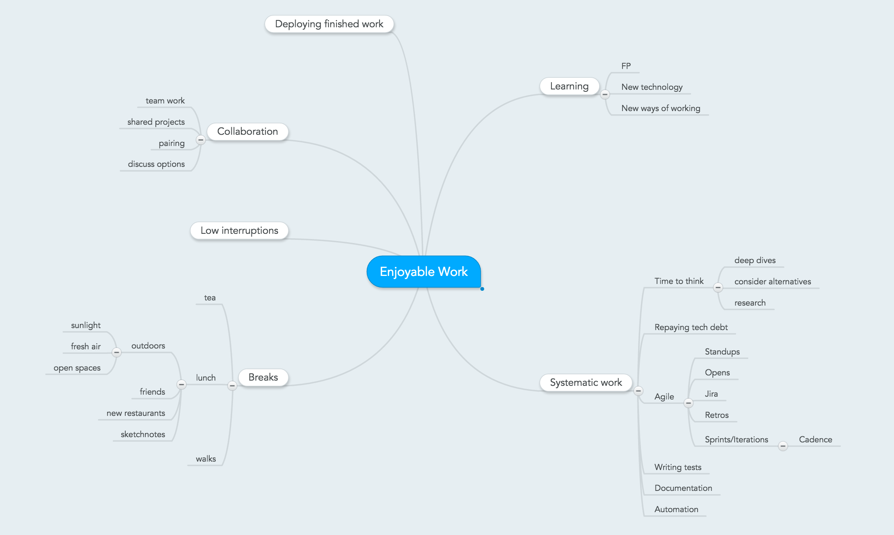

Enjoyable Work
October 14, 2015
culture
,
life
,
work
Here are some of the ways I enjoy to work.

Mind map of what I find enjoyable about work
Please enable JavaScript to view the
comments powered by Disqus.